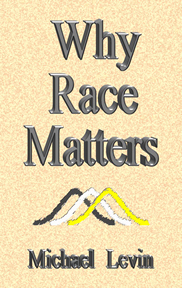

Why Race Matters
Michael Levin’s 1997 masterpiece quickly became a classic, and just as quickly went out of print. Used copies of the hardcover edition now sell for up to $500.00! New Century Foundation has secured the publishing rights, and is proud to offer this affordable softcover edition. It includes every word of the original, plus a new foreword by Jared Taylor. Order this feast for the mind today!
|  |
| Buy |
|---|
What others say about Why Race Matters
Philosopher Michael Levin has delivered one of the most authoritative and incisive treatises on the importance of race ever written. Why Race Matters is must reading for anyone interested in the debates on race, IQ, crime, welfare, affirmative action, and multiculturalism. Levin cross-examines the statistical data, psychological test scores, and behavioral genetic analyses, brilliantly illuminating the logical pitfalls and stumbling blocks in so much of what has been written on the subject. His powerful logic digs deep and his courageous inferences vault forward. Levin seems to be always bang on target.
— J. Philippe Rushton, University of Western Ontario
Prof. Michael Levin’s analytical tour de force differs uniquely from other books dealing with racial differences. Levin views the various complex arguments regarding the reality and nature of race and race differences, not from any of the typical specialized viewpoints of anthropology, education, evolution, genetics, psychology, or sociology, or from any social or political ideology, but from the sweeping vantage point of the philosophy of science. Levin’s impressive technical mastery of the subject is evinced in his book’s amazingly broad and detailed scope and analytical depth. But what I consider the most valuable and exciting feature of Levin’s treatment of every facet of the race issue is the consistent critical stance his incisive intellect brings to every aspect, based entirely on his keen understanding of the philosophy of science. It is definitely a “must read” for all serious students of this subject.
— Arthur R. Jensen, U.C. Berkeley
Why Race Matters does exactly what the title promises — it removes all illusions about the insignificance of race, and explains what racial differences mean for a multiracial society. It is a thorough, overwhelmingly convincing treatment of America’s most serious and least understood problem. (Read the rest of the review here.)
— Jared Taylor, editor, American Renaissance